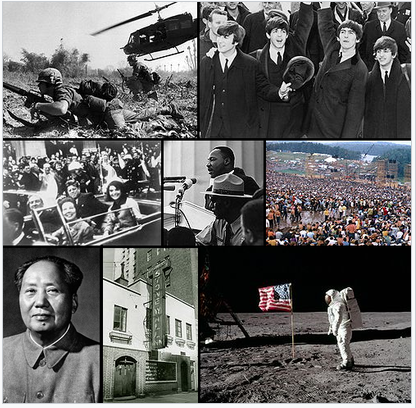
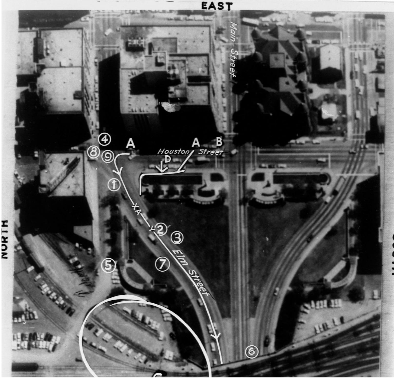

1960 (MCMLX) was a leap year starting on Friday of the Gregorian calendar, the 1960th year of the Common Era (CE) and Anno Domini (AD) designations, the 960th year of the 2nd millennium, the 60th year of the 20th century, and the 1st year of the 1960s decade.
What happened in 1960 Major News Stories include US Enters Vietnam War, The IRA starts it's fight against the British, John F Kennedy wins presidential Election , Chubby Chequer and The twist start a new dance craze, Soviet missile shoots down the US U2 spy plane, Aluminum Cans used for the first time, The US announces 3,500 American soldiers are going to be sent to Vietnam, Xerox introduces the first photocopier, Fidel Castro nationalises American Oil, sugar and other US interests in Cuba, OPEC ( Organization of Petroleum Exporting Countries ) is formed.
On the contrary, by the end of the 1960s, it seemed that the nation was falling apart. Lyndon Johnson’s “Great Society” splintered as the Democratic Party split and America became increasingly enmeshed in the Vietnam War.

During his presidential campaign in 1960, John F. Kennedy had promised the most ambitious domestic agenda since the New Deal: the “New Frontier,” a package of laws and reforms that sought to eliminate injustice and inequality in the United States. But the New Frontier ran into problems right away: The Democrats’ Congressional majority depended on a group of Southerners who loathed the plan’s interventionist liberalism and did all they could to block it. The Cuban Missile Crisis and failed Bay of Pigs invasion was another disaster for Kennedy.
It was not until 1964, after Kennedy was shot, that President Lyndon B. Johnson could muster the political capital to enact his own expansive program of reforms. That year, Johnson declared that he would make the United States into a “Great Society” in which poverty and racial injustice had no place. He developed a set of programs that would give poor people “a hand up, not a handout.” These included Medicare and Medicaid, which helped elderly and low-income people pay for health care;